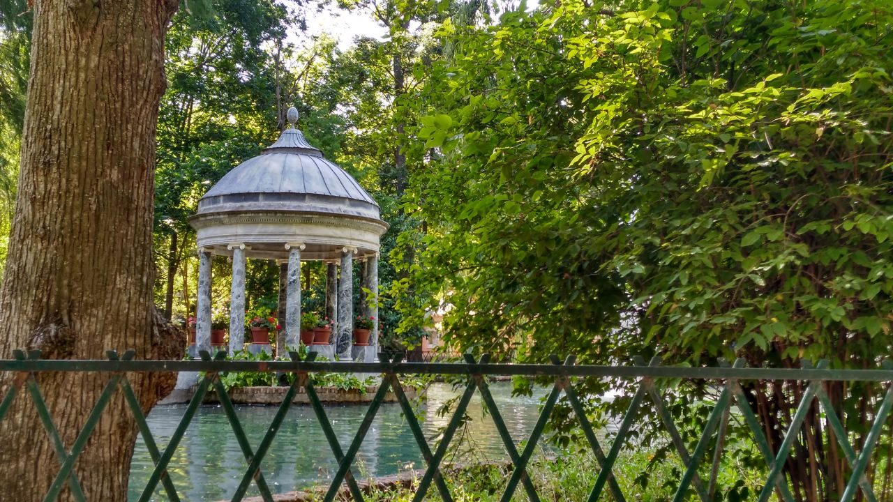

Nuevo país pendiente, ¿Cual será?
Publicado: 14 Marzo 19Cual será es país que se realizara después de la llegada de europa...
Leer más>>Cuento mis historias de mis viajes más impresionantes
| Características | |
|---|---|
| Nombre: | Aranjuez (Madrid) |
| País: | España |
| Población (2018): | 53k hab |
Debo reconocer que el lugar donde vivo es uno de los lugares más bonitos en donde se puede vivir, sobre todo si es verano. Aquí os dejo con los los detalles:
Aranjuez es un municipio y ciudad española en el extremo sur de la Comunidad de Madrid, cuyo término se encuentra atravesado por los ríos Tajo y Jarama.Es uno de los Reales Sitios de la Corona de España desde que Felipe II así lo nombrara en 1560, aunque posee además el título de villa desde 1899, razón por la cual el municipio es conocido como «Real Sitio y Villa de Aranjuez».4 Aranjuez es cabecera del partido judicial homónimo.
Bueno, la verdad todo comenzó cuando quería hablar con mis padres sobre si hubiera un posibilidad de viaje y luego mis padres llamaron a uno de mi familia de otra parte para que yo pudiese viajar a otro país y seguir con mis estudios y encontrar un propósito en mi vida
Después de unos meses desde que les mencioné el asunto, mi tía se puso en contacto conmigo para que yo pudiese viajar y acepte su propuesta porque ahí creo que pudiera más o menos conocer más gente y conocer nuevas culturas yo las veces
Aranjuez cuenta con un clima mediterráneo de interior, al igual que el centro de España. Los inviernos son frescos y moderadamente húmedos, con frecuentes heladas durante el invierno, sobre todo en enero, aunque pueden producirse desde noviembre a marzo. Sin embargo, las nevadas son muy poco habituales.
Son muy frecuentes fenómenos de estancamiento anticiclónico, en los cuales se forman densas nieblas debidas a la humedad del Tajo. El mes más frío es enero (5.7 °C de media), con un récord mínimo de -9.5 °C.
Cual será es país que se realizara después de la llegada de europa...
Leer más>>Como podéis haber notado ya la pagina tiene un nuevo look...
Leer más>>